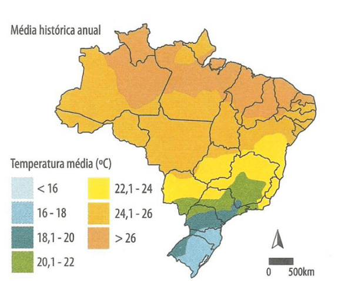
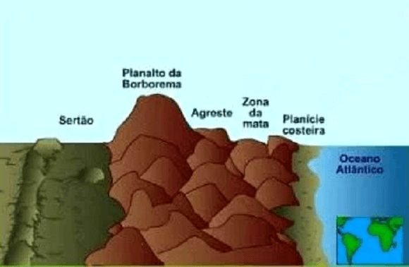
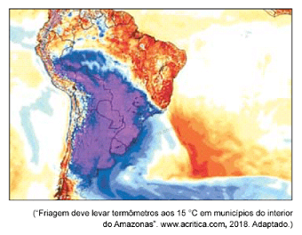
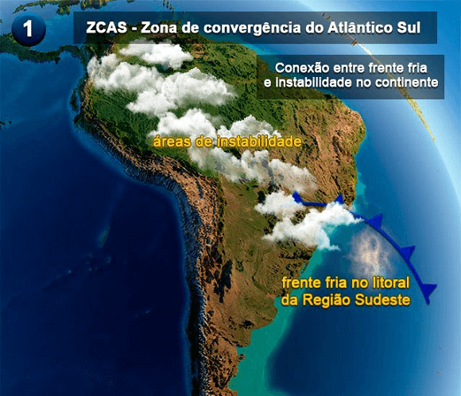

Texto 15 - Climas do Brasil II – problemas climáticos
Conteúdo: Clima; Tempo; Tipos de Clima: Equatorial, tropical, subtropical, tropical de
altitude, tropical úmido, tropical semiárido. Climogramas.
Objetivo: Identificar e localizar os principais climas do Brasil. Equatorial, tropical,
tropical úmido (litorâneo), tropical de altitude, tropical semiárido, subtropical.
Digite seu nome
Introdução
Na aula anterior, conhecemos uma variedade de tipos de climas, desde o
tropical ao equatorial e subtropical, e descobrimos quais fatores influenciam a configuração climática do
Brasil.
Hoje, vamos aprofundar nosso entendimento sobre os problemas socioambientais ligados ao clima no Brasil.
O clima é um fator determinante para diversas questões sociais e ambientais em nosso país, desde a ocorrência
de secas até a intensificação de eventos climáticos extremos, como tempestades e enchentes.
Climas do Brasil II – Problemas Climáticos
Mudança Climática
Definição: Alterações de longo prazo nas condições climáticas globais, principalmente causadas pela emissão de gases de efeito estufa.
Consequências: Aumento do nível do mar, alterações no clima, intensificação de eventos climáticos extremos.
Massas de Ar
Definição: Grandes volumes de ar com características homogêneas de temperatura e umidade que se movem pela atmosfera.
Influência no Clima: Mudanças nas condições climáticas quando massas de ar com diferentes características se encontram.
Seca
Definição: Período prolongado com precipitação abaixo do normal, resultando em escassez de água.
Impactos: Afeta a agricultura, a pecuária, e a disponibilidade de água potável. Regiões mais afetadas incluem o Nordeste e partes do Sudeste e Sul.
Transposição do Rio São Francisco
Objetivo: Levar água do Rio São Francisco para áreas do Nordeste afetadas pela seca.
Desafios e Controvérsias: Impactos ambientais e sociais, incluindo perda de terras e impactos no ecossistema do Rio São Francisco.
Fenômeno El Niño
Definição: Aquecimento anômalo das águas superficiais do Oceano Pacífico equatorial.
Impactos no Brasil: Redução das chuvas no Nordeste, aumento das temperaturas e risco de incêndios na Amazônia. Pode afetar também outras regiões com variações de chuva e temperatura.
Relevo e Influência Climática
Influência: O relevo pode bloquear ou direcionar massas de ar, afetando a formação de chuvas e a distribuição da umidade.
Exemplo: A Serra da Borborema no Nordeste influencia a formação de chuvas na região do Agreste.
Fenômeno La Niña
Definição: Resfriamento anômalo das águas superficiais do Oceano Pacífico equatorial.
Impactos no Brasil: Aumento das chuvas nas regiões Norte e Nordeste, estiagem nas regiões Sul e Sudeste.
Ciclones
Definição: Sistemas de baixa pressão que se formam quando massas de ar quente e fria se encontram.
Impactos no Brasil: Chuvas intensas, ventos fortes, enchentes e danos estruturais. Exemplos incluem ciclones extratropicais no Sul do Brasil.
Medidas para Lidar com a Secas
Curto Prazo: Distribuição de água e alimentos, construção de reservatórios.
Longo Prazo: Tecnologias de reuso de água, dessalinização, políticas de conservação.
Importância do Conhecimento Climático
Relevância: Compreender problemas climáticos é essencial para implementar políticas públicas eficazes e para a preservação ambiental.
Objetivo: Melhorar a qualidade de vida, garantir a segurança alimentar e hídrica, e promover a sustentabilidade.
Questões para serem respondidas no caderno sobre o tema da aula de hoje:
1. O que são mudanças climáticas e quais são suas principais causas e consequências para o Brasil?
2. Como as massas de ar influenciam o clima no Brasil? Dê exemplos de como diferentes massas de ar afetam as condições climáticas em várias regiões do país.
3. Quais são os principais impactos da seca no Nordeste brasileiro? Explique como a seca afeta tanto o meio ambiente quanto a sociedade nessa região.
4. O que é a transposição do Rio São Francisco e qual é o objetivo desse projeto? Discuta os principais desafios e controvérsias relacionados a essa obra.
5. Como o fenômeno El Niño afeta o clima no Brasil? Quais são as consequências típicas do El Niño para as diferentes regiões do país?
6. Qual é o papel do relevo na configuração climática do Nordeste brasileiro? Como as serras e outras formações geográficas influenciam a distribuição de chuvas na região?
7. Explique a diferença entre o El Niño e o La Niña. Como cada um desses fenômenos influencia o clima no Brasil?
8. Como as massas de ar podem provocar ciclones e quais são os impactos desses eventos no Brasil? Dê um exemplo de um ciclone recente e seus efeitos.
9. Discuta as medidas que podem ser adotadas para lidar com a seca no Brasil. Quais são as estratégias de curto e longo prazo que podem ajudar a mitigar os efeitos da seca?
10. Qual é a importância de compreender os problemas socioambientais relacionados ao clima para a sociedade e para a preservação ambiental? Como o conhecimento sobre o clima pode ajudar na implementação de políticas públicas?
Duvid - Podcast
Problemas climáticos do Brasil
Duvid: Olá pessoal, bem-vindos a mais um episódio do Duvid Podcast. No episódio anterior,
conversamos com o
geógrafo Prof. Silva sobre os diferentes climas do Brasil e sua distribuição geográfica. E hoje, voltamos
com ele para abordar um tema muito importante: os problemas socioambientais relacionados ao clima no Brasil.
Prof. Silva: Olá Duvid, olá pessoal. É um prazer estar aqui novamente para falar sobre um
tema tão relevante
e atual.
Duvid: Sim, com certeza. O Brasil é um país com uma riqueza natural imensa, mas também
enfrenta diversos
desafios socioambientais relacionados ao clima. Quais são os principais problemas que o senhor destaca,
Prof. Silva?
Prof. Silva: Existem vários problemas relacionados ao clima que afetam o Brasil, como as
mudanças
climáticas, o desmatamento, a poluição atmosférica, a seca, as inundações, os ciclones e furacões e o
fenômeno El Niño, por exemplo.
Duvid: Realmente são muitos desafios. O senhor poderia falar um pouco mais sobre cada um
desses problemas e
como os cientistas lidam com eles?
Prof. Silva: Claro. Os cientistas de modo geral, tanto na área de humanidades quanto na área
de exatas ou
biológicas, se fundamentam no método científico. Os cientistas procuram investigar e compreender o mundo ao
nosso redor de forma organizada e sistemática, ou seja com regras rígidas. Afinal, descobrir a verdade ou
pelo menos o funcionamento de determinado fenômeno não pode ser somente baseado no que as pessoas supõem.
Desse modo podemos observar como o clima funciona por exemplo, formular hipóteses, fazer testes na realidade
e analisar muitos, muitos dados.
Eu trouxe comigo alguns mapas resultado do agrupamento de anos de dados, ossos do ofício.

Fonte: Mendonça (2007).
Observe no mapa de média histórica de temperatura que há um aumento crescente de sul para o norte. Ela segue
a distribuição de acordo com a latitude, onde mais próximo do Equador será muito mais quente. Por que o
Brasil é quente? Umas das razões é que a maior parte do território (94%) está nas zonas climáticas
equatorial (55%, mais da metade, e tropical (39%). Os 6% restantes está na faixa subtropical com
temperaturas em médias mais baixa.
Daí eu posso perguntar: somente com os dados de temperatura eu posso definir o clima? Obviamente que não,
precisamos fazer relações com outras variáveis para obter explicações mais gerais sobre isso. Qual era a
outra pergunta mesmo?
Duvid: ... sobre as mudanças climáticas.
Prof. Silva: Ah sim, as mudanças climáticas são resultado da emissão de gases de efeito
estufa na atmosfera,
principalmente pelo uso de combustíveis fósseis como vocês já estudaram aqui mesmo no Duvid. Isso poderia
causar uma alteração no clima local ou até mesmo global, dependendo do tamanho do impacto, o que traria
consequências como aumento do nível do mar, alterações no clima e nas condições naturais, e aumento da
frequência e intensidade de eventos climáticos extremos.
Duvid: E quais são os impactos da mudança climática na sociedade e no meio ambiente?
Prof. Silva: Os impactos são diversos e afetam tanto a sociedade quanto o meio ambiente.
Por exemplo, a
elevação do nível do mar pode causar inundações costeiras, o que pode levar a perdas de vidas e bens
materiais. A seca e a falta de chuvas podem prejudicar a agricultura e a pecuária, afetando a economia local
e gerando desigualdades sociais. Além disso, a alteração das condições naturais pode afetar a
biodiversidade, levando à extinção de espécies e prejudicando a manutenção do equilíbrio ecológico.
Duvid: E quais são as regiões do Brasil que mais sofrem com a mudança climática?
Prof. Silva: Todas as regiões do Brasil são afetadas pela mudança climática, mas algumas são
mais sensíveis
que outras. A região Nordeste, por exemplo, é bastante vulnerável às secas e às altas temperaturas, enquanto
a Amazônia sofre com o desmatamento e a alteração do regime de chuvas. Já a região Sul é mais afetada por
inundações e eventos extremos como tempestades e ciclones.
Duvid: Creio que seria interessante entrarmos mais nos problemas da seca, que é muito
conhecido mas pouco
debatido ou aprofundado. Prof. Silva, poderia nos explicar um pouco sobre a origem desse problema e suas
consequências?
Prof. Silva: Certamente, Duvid. A seca é um fenômeno meteorológico que ocorre quando há uma
diminuição
significativa na quantidade de chuvas em uma determinada região por um período prolongado de tempo. No
Brasil, ela é mais comum em regiões como o Nordeste, que já enfrentam problemas de escassez de água mesmo em
períodos de chuvas regulares.
As consequências da seca são diversas e afetam tanto o meio ambiente quanto a sociedade. Na natureza, a seca
pode levar à morte de animais e plantas, além de prejudicar a qualidade do solo e diminuir a disponibilidade
de recursos hídricos. Já na sociedade, a seca pode levar à escassez de alimentos, à falta de água potável e
à redução da produtividade de setores como a agricultura e a pecuária.
Duvid: E quais Estados do Brasil são mais afetados pela seca?
Prof. Silva: Como eu disse anteriormente, a região Nordeste é a mais afetada pela seca,
principalmente nos
estados de Pernambuco, Ceará, Rio Grande do Norte e Bahia. Mas também há outras regiões do país que
enfrentam problemas de escassez de água, como é o caso da região Sudeste, especialmente nos estados de São
Paulo e Minas Gerais, que enfrentaram uma crise hídrica nos últimos anos. E também a região Sul,
principalmente no Rio Grande do Sul. Outro dia eu estava vendo uma retrospectiva bem aleatória de 1985, e lá
estava bem destacado seca no Rio Grande do Sul, bem como chuvas e enchentes no Sudeste, especialmente, Rio
de Janeiro e São Paulo. O problema é muito mais antigo do que imaginamos.
Duvid: E o que pode ser feito para lidar com a seca?
Prof. Silva: Há diversas medidas que podem ser adotadas para minimizar os impactos da seca,
desde ações de
curto prazo, como a distribuição de água potável e alimentos para as populações mais afetadas, até medidas
de longo prazo, como a construção de reservatórios de água e a adoção de tecnologias de reuso e
dessalinização da água do mar. Também é importante investir em políticas de conservação e preservação
ambiental, para garantir a sustentabilidade dos recursos hídricos e evitar o agravamento da seca no futuro.
Na região do semiárido brasileiro, por exemplo, diversas comunidades têm adotado técnicas de convivência com
o clima, como a construção de cisternas para captar e armazenar água da chuva, além de técnicas de irrigação
mais eficientes e adaptadas ao clima árido da região. Essas iniciativas têm contribuído para melhorar a
qualidade de vida das pessoas e garantir a segurança alimentar e hídrica das comunidades afetadas pela seca.
Duvid: ... e a transposição do Rio São Francisco, ajudou a melhorar a situação? Como foi
esse processo?
Prof. Silva: A transposição do Rio São Francisco é uma obra gigantesca que teve início em
2007 e que busca
levar água do rio São Francisco para outras regiões do Nordeste brasileiro, como forma de amenizar os
efeitos da seca na região. A ideia é captar água em trechos do rio em Minas Gerais e na Bahia e
transportá-la por canais e túneis até as regiões mais afetadas pela seca no Nordeste.
Esse projeto tem gerado muita controvérsia desde o início, com críticos apontando que a obra não resolverá os
problemas estruturais da região e que terá impactos ambientais e sociais significativos. Por exemplo, muitas
comunidades que vivem às margens do rio São Francisco foram impactadas pelas obras de construção dos canais
e túneis, perdendo terras e tendo sua rotina e atividades econômicas afetadas.
Além disso, há preocupações sobre o impacto ambiental da obra, já que o rio São Francisco é um ecossistema
sensível e que já sofre com a poluição e a degradação em algumas de suas áreas. A transposição poderia
agravar essa situação e trazer consequências para a biodiversidade da região.
Por outro lado, os defensores do projeto argumentam que a transposição é uma forma necessária de lidar com a
seca no Nordeste e que pode contribuir para melhorar a qualidade de vida das pessoas e fortalecer a economia
da região. Ainda há muito debate em torno dessa questão e é importante que sejam considerados os impactos
ambientais e sociais de qualquer projeto desse porte.
Duvid: Realmente, essa é uma grande obra que mostra o potencial do ser humano diante do
relevo. E por falar
em relevo, como ele afeta ou influência na seca, especialmente no Nordeste?
Prof. Silva: O exemplo da transposição do Rio São Francisco ilustra bem a luta do homem com
seu entorno ou
sua tentativa de dominar, agora com a tecnologia, a natureza cada vez mais artificializada. Eu gosto de
modificar ditados antigos, como aquele que diz: se a montanha não vai à Maomé, então, podemos construir um
túnel que liga São Paulo passando pela Serra do Mar em direção à planície litorânea.
Ou seja, se as características do relevo não são favoráveis para nossas atividades, devemos buscar maneiras
de adaptá-las para nosso uso.
Também podemos aproveitar o relevo para gerar energia através de usinas hidrelétricas, como é comum em
regiões com muitas montanhas e rios.
Em resumo, ao invés de evitar ou destruir as montanhas ou os rios, devemos encontrar maneiras de conviver com
eles e utilizar suas características de forma sustentável e inteligente.
E em relação à seca, há vários fatores que combinados provocam esse tipo de clima. O relevo é apenas um
deles.
Duvid: O nordeste possui uma serra que impede a formação de chuvas e umidade?
Prof. Silva: Vamos observar de dois ângulos diferentes, antes de afirmar que um evento causa
outro
diretamente. O nordeste do Brasil é uma região com características climáticas específicas, como a presença
de altas pressões atmosféricas e o predomínio de massas de ar seco, que contribuem para a formação de um
clima semiárido, com baixa umidade e pouca precipitação.
Apesar disso, a região nordeste possui algumas serras importantes, como a Serra da Borborema e a Chapada
Diamantina, que têm uma influência significativa na dinâmica climática local. Essas serras atuam como
barreiras físicas que podem interferir no deslocamento das massas de ar, favorecendo a formação de chuvas em
algumas áreas e inibindo em outras.
Por exemplo, a Serra da Borborema, que se estende por diversos estados nordestinos, tem um papel importante
na formação de chuvas na região do Agreste, que fica em seu sopé. Isso ocorre porque a Serra da Borborema
atua como uma barreira que impede o deslocamento das massas de ar seco vindas do interior do continente,
permitindo que as massas de ar úmido vindas do litoral possam penetrar no interior e favorecer a formação de
chuvas.

Por outro lado, essas massas úmidas vindas do oceano encontram uma barreira para atingir o sertão nordestino.
Portanto, podemos dizer que as serras nordestinas impedem a formação de chuvas e umidade, mas para sermos
mais científicos, podemos dizer que as Serras influenciam a dinâmica climática local de maneiras distintas.
Duvid: ... e o papel do relevo e das massas de ar no sertão nordestino?
Prof. Silva: Eu gosto muito de comparar as massas de ar a "correntes de ar" que se
movimentam pela
atmosfera, assim como as correntes de água que se movem em um rio ou mar. Dependendo da temperatura e
umidade dessas correntes de ar, elas podem trazer chuvas, tempestades, frio ou calor para as regiões por
onde passam, assim como as correntes de água podem trazer nutrientes, sedimentos ou animais para diferentes
partes do ecossistema marinho. Eu também trouxe mapas sobre isso e vocês podem verificar as características
de cada uma delas.
Massa Equatorial continental - É uma massa (mEc) quente e instável originada na Amazônia Ocidental,
que atua em quase todas as regiões do país, causando instabilidades atmosféricas. Provoca chuvas
abundantes e quase diárias no verão e outono na região amazônica.
Massa Equatorial atlântica - É quente, úmida (mEa) e originária do Atlântico Norte (próximo à ilha de
Açores). Atua nas regiões litorâneas do Norte e do Nordeste, principalmente no verão e na primavera,
sendo também formadora dos ventos alísios de Nordeste.
Massa Equatorial atlântica - É quente, úmida (mEa) e originária do Atlântico Norte (próximo à ilha de
Açores). Atua nas regiões litorâneas do Norte e do Nordeste, principalmente no verão e na primavera,
sendo também formadora dos ventos alísios de Nordeste.
Massa polar atlântica - Forma-se no Oceano Atlântico Sul - (mPa), próximo à Patagônia, sendo fria e
úmida e atua, sobretudo no inverno, no litoral nordestino (chuvas frontais), nos estados do sul
(causa queda de temperatura e geadas) e na Amazônia Ocidental provoca o fenômeno da "friagem".
Massa Tropical continental - Originada (mTc) na Depressão do Chaco (planície na América do Sul) é uma
massa quente e seca. Atua, basicamente, em sua área de origem, causando longos períodos quentes e
secos no sul da região Centro-oeste e no interior das regiões Sul e Sudeste. É também conhecida como
bloqueio atmosférico por barrar frentes frias.
O sertão nordestino está localizado em uma região influenciada pelas massas de ar. Durante boa parte do ano,
predomina na região a massa de ar tropical atlântica, que é quente e úmida. Essa massa de traz bastante
umidade e calor e reforça o caráter tropical do nosso clima. Como nosso litoral possui diversas serras, a
mTa provoca chuvas, praticamente durante todo o ano no Brasil, principalmente no verão.
Também no verão temos a massa equatorial atlântica (mEa) que alimenta os ventos
alísios nessa região e atua no litoral norte e nordeste. Nesse período, as chuvas são mais
intensas e frequentes, o que possibilita a manutenção de algumas atividades agrícolas e econômicas na
região.
×
Ventos alísios (ou alisados) são os ventos predominantes permanentes que sopram
de leste para oeste na região equatorial da Terra. Os ventos alísios sopram principalmente de
nordeste no Hemisfério Norte e de sudeste no Hemisfério Sul, fortalecendo-se durante o inverno
no respetivo hemisfério e quando a oscilação Ártica está na sua fase quente.
No entanto, é importante ressaltar que o sertão nordestino apresenta uma grande variabilidade climática e
hidrológica, o que exige a adoção de medidas de adaptação e mitigação para lidar com os efeitos da seca e da
aridez na região.
Duvid: Essas massas de ar que vemos no jornal que faz cair a temperatura drasticamente pelo
Brasil?
Prof. Silva: Isso mesmo. Quando escutamos que a massa polar está chegando, pode se preparar
que teremos 3 ou 4 dias de baixas temperaturas pela frente.
Já vimos que o ar frio procura áreas de baixa pressão e a massa de ar polar se move de uma região muito fria
para uma região mais quente. Isso pode causar uma queda acentuada na temperatura e também afetar outros
aspectos do clima, como a umidade do ar e a ocorrência de chuvas.
No Brasil, a massa de ar polar pode trazer uma mudança significativa no clima, especialmente durante o
inverno. Essa massa de ar frio pode causar uma queda brusca nas temperaturas, chegando a nevar em algumas
regiões do país. Além disso, essa mudança de clima pode ter um impacto na saúde das pessoas, causando
problemas respiratórios, por exemplo. O poder dessa massa atinge até a Amazônia e faz cair as temperaturas
por lá também.
Vamos relembrar que uma área de baixa pressão é formado quando o ar quente sobe e a área de alta pressão
ocorre quando o ar frio desce, porque ele é mais denso, mais pesado. Essa troca de ar frio e quente faz a
atmosfera circular. Quando uma massa de ar fria se choca com outra quente, daí vem aquela frente fria,
provocando chuvas e diminuição brusca de temperaturas.
Duvid: E eu que achava que o clima se reduzia a uma variação de temperatura. Tem muita mais
coisas envolvidas nisso. Agora, prof. Muito se fala muito sobre o El Niño, poderia explicar esse fenômeno
também?
Prof. Silva: O El Niño é um fenômeno climático muito curioso. Até hoje não há um consenso
sobre sua origem e sua regularidade varia entre 2 a 7 anos. Os cientistas sabem que ele se origina na região
equatorial do Oceano Pacífico, próximo à costa oeste da América do Sul. Ele é caracterizado pelo
aquecimento das águas superficiais do mar nessa região, causado por um enfraquecimento dos
ventos alísios, que normalmente sopram do leste para o oeste, empurrando a água quente em direção à Ásia.
Quando esse processo é interrompido ou enfraquecido, a água quente fica represada na costa da América do
Sul, elevando a temperatura da superfície do mar e gerando mudanças significativas nas condições do clima.
No Brasil, o El Niño pode ter impactos importantes, afetando principalmente a região Nordeste e a Amazônia.
Durante um episódio de El Niño, a região Nordeste pode sofrer com a redução das chuvas, o que pode levar à
seca e à falta de água para consumo humano, animal e para a agricultura. Já na Amazônia, o El Niño pode
provocar um aumento da temperatura e uma diminuição da precipitação, o que pode levar ao aumento do risco de
incêndios florestais e à redução da biodiversidade da região.
Além disso, o El Niño também pode ter impactos em outras regiões do Brasil, como no Sudeste e no Sul, onde
pode ocorrer um aumento da chuva e das temperaturas, respectivamente. Essas mudanças podem afetar
diretamente a produção agrícola, o setor elétrico e a saúde pública, entre outros setores.
E ainda temos o fenômeno oposto, La Niña. O La Niña é um fenômeno climático que ocorre no Oceano Pacífico
Equatorial, caracterizado pelo resfriamento anômalo das águas superficiais do mar. Embora o
La Niña possa ter impactos climáticos significativos em diferentes partes do mundo, seus efeitos no Brasil
nem sempre são tão claros quanto os do El Niño.
Em geral, durante um evento de La Niña, é esperado que haja um aumento na frequência e intensidade de chuvas
nas regiões Norte e Nordeste do Brasil, enquanto as regiões Sul e Sudeste podem sofrer com períodos de
estiagem e seca. No entanto, esses impactos podem ser influenciados por outros fatores climáticos e
atmosféricos, tornando difícil prever com precisão como o La Niña afetará o clima em cada região específica
do Brasil.
Duvid: Nossa prof., confesso que o clima exerce muita influência em nossa vida, que eu não
imaginava. Uma última pergunta. As massas de ar estão ligadas ao ciclones? Como funciona esse processo?
Prof. Silva: Os ciclones que afetam o Brasil são principalmente formados no Oceano
Atlântico Sul, em áreas próximas à costa da região sul e sudeste do país. Esses ciclones são conhecidos como
ciclones extratropicais ou ciclones de latitudes médias. Eles são formados quando massas de ar frio e quente
se encontram, gerando uma zona de baixa pressão atmosférica. Essa zona de baixa pressão pode se intensificar
com a entrada de mais ar frio e úmido, gerando ventos fortes e chuvas intensas.
Os impactos dos ciclones no Brasil variam de acordo com sua intensidade e trajetória. Eles podem causar
fortes chuvas, ventos intensos e ondas elevadas, gerando enchentes, deslizamentos de terra, interrupções no
abastecimento de energia elétrica e de água potável, além de danos em edificações e estruturas.
Um exemplo recente disso foi em junho de 2020, quando um ciclone extratropical com intensidade de ciclone
subtropical atingiu a região sul do Brasil. Esse evento causou estragos e deixou mais de 1,5 milhão de
pessoas sem energia elétrica.
Duvid: Pessoal, vamos encerrar hoje, e aproveito para resumir os diversos tópicos
relacionados aos problemas socioambientais ligados ao clima no Brasil discutimos. Abordamos a influência das
massas de ar na formação do clima, a seca que afeta o Nordeste e a importância da transposição do Rio São
Francisco, o impacto do fenômeno El Niño na região, além da influência do relevo na configuração do clima do
país.
Também destacamos a importância de compreendermos os efeitos da mudança climática em nosso país e a
necessidade de implementarmos ações de mitigação e adaptação.
Gostaríamos de agradecer ao professor Silva por mais uma vez compartilhar seus conhecimentos e experiências
conosco no Duvid - Podcast. Esperamos que nossos ouvintes tenham aprendido e se conscientizado sobre a
importância do clima para a sociedade e para o Planeta.
Prof. Silva: Quero agradecer mais uma vez pelo convite para participar deste podcast e
discutir temas tão importantes e relevantes como os problemas ambientais ligados ao clima no Brasil. É
fundamental que a sociedade esteja informada e engajada em buscar soluções para essas questões, seja por
meio de mudanças de hábitos individuais, seja por meio da pressão por políticas públicas efetivas.
Obrigado mais uma vez pela oportunidade e até a próxima!
Teste seu conhecimento
O mapa representa uma onda de frio que atingiu o sul da Amazônia em 2018

Um fator climático que explica a friagem nessa região
Teste seu conhecimento
Marque a questão que explica a principal diferença entre o El Niño e o La Niña.
Teste seu conhecimento
Leia os dois slogans a seguir:
Slogan 1: Água para todos, gestão para o futuro.
Slogan 2: Água é vida, mas educação é desenvolvimento.
Os diferentes pontos de vista sobre o megaprojeto de transposição das águas do Rio São Francisco quando
confrontados indicam que
Na Ciência, todas as perguntas têm seu valor e podem levar a avanços importantes em
diversas áreas do conhecimento.
P:
Como a transposição do Rio São Francisco pode afetar o clima na região Nordeste do Brasil?
R:
A transposição do Rio São Francisco é um dos projetos de infraestrutura hídrica mais controversos do Brasil.
O projeto consiste em levar água do rio para regiões do Nordeste que sofrem com a seca, através de canais e
tubulações que cortam diversos estados da região. O objetivo é fornecer água para a agricultura, a indústria
e a população, especialmente nas áreas mais áridas e pobres do Nordeste.
No entanto, existem muitas preocupações em relação aos efeitos que a transposição pode ter no clima da região
Nordeste. Alguns especialistas alertam que o projeto pode ter efeitos negativos, como a alteração do regime
das chuvas e o aumento da salinidade do solo. A construção de canais e tubulações para desviar a água do rio
pode afetar a vazão e a qualidade da água, gerando impactos no ecossistema local.
Outra preocupação é que a transposição do Rio São Francisco possa gerar uma falsa sensação de segurança
hídrica, incentivando o uso desordenado e irresponsável da água. A região Nordeste do Brasil é uma das mais
vulneráveis aos efeitos da mudança climática, e a transposição não deve ser vista como uma solução
definitiva para a crise hídrica na região. É preciso investir em alternativas sustentáveis e de longo prazo,
como o uso de tecnologias de reuso de água, a implantação de sistemas de irrigação mais eficientes e a
preservação dos ecossistemas locais.
P:
Ontem na TV, o apresentador falou sobre a friagem no Brasil? O que seria isso?
R:
A Amazônia é conhecida por ser uma região de clima tropical, quente e úmido, com temperaturas médias anuais
em torno de 26°C. No entanto, em algumas épocas do ano, especialmente durante o inverno, a região pode
sofrer com o fenômeno da friagem. A friagem é um evento climático caracterizado pela queda brusca de
temperatura, que pode chegar a valores abaixo de 10°C, acompanhada de ventos fortes e chuvas intensas.
A friagem ocorre devido à entrada de massas de ar frio e seco, originárias do sul da América do Sul, que se
deslocam em direção à região Norte do país. Essas massas de ar avançam sobre a Amazônia, provocando uma
queda significativa na temperatura, que pode afetar a fauna e a flora locais, além da população que não está
preparada para temperaturas tão baixas. A ocorrência de friagem na Amazônia pode ser um importante fenômeno
a ser estudado, especialmente em relação aos seus impactos na biodiversidade e nos ecossistemas da região.
P:
Explique o que é a Zona de convergência do Atlântico Sul?
R:
A Zona de Convergência do Atlântico Sul (ZCAS) é um fenômeno climático que ocorre na região tropical do
Oceano Atlântico, próximo à costa brasileira. A ZCAS é formada pela convergência de massas de ar quente e
úmido que vêm da Amazônia e do Oceano Atlântico, causando chuvas intensas e persistentes em diversas regiões
do país. A ZCAS é mais intensa durante os meses de verão e pode provocar enchentes, deslizamentos de terra e
outros desastres naturais, especialmente em áreas urbanas e em regiões com baixa capacidade de adaptação.
A Zona de Convergência do Atlântico Sul é um fenômeno importante a ser monitorado pelas autoridades e pelos
moradores das regiões afetadas, pois suas chuvas intensas podem trazer impactos significativos para a
população e a economia local. É importante investir em infraestrutura de prevenção e adaptação, como a
construção de sistemas de drenagem e contenção de enchentes, além da promoção de práticas agrícolas
sustentáveis e da proteção de áreas de risco. A compreensão dos padrões climáticos e ações para mitigar seus
impactos é essencial para a gestão sustentável do território brasileiro. Observe o mapa abaixo:

Desafio - Jornada do herói: Ressurreição
Na última aula, nosso herói iniciou sua jornada para voltar para casa.
Antes disso, ele vai passar por um último teste: a Ressurreição, uma espécie de purificação antes de
ingressar de volta ao Mundo Comum.
E aí, estão prontos para colocar a imaginação em ação e descobrir qual será o destino do nosso corajoso
protagonista? Formem seus grupos e vamos em frente!
Instruções
Forme um grupo com 5-6 estudantes;
Leia o texto abaixo e discuta com seu grupo o conteúdo das questões;
Faça anotações em seu caderno;
Seja criativo, use os conhecimentos que você já possui sobre o Desafio.
Tempo da atividade: 25 minutos.
Ressurreição (11)
Leia a passagem abaixo:
“Nós, Buscadores cansados, estamos voltando para a aldeia. Vejam! A fumaça das fogueiras de Nossa
Tribo! Apressem o passo! Mas... esperem aí. O xamã aparece para nos Impedir de entrar Vocês
estiveram na Terra dos Mortos, diz ele, e parecem ser a própria morte: cobertos de sangue,
carregando a carne dilacerada e a pele daquilo que caçaram. Se entrarem na aldeia sem se purificar e
se lavar, podem levar daqui a morte de volta com vocês. Vão ter que passar por um sacrifício final,
antes de se reunirem ao resto da tribo. Seu "eu" guerreiro tem que morrer, para que vocês possam
renascer inocentes para o grupo. Será preciso guardar a sabedoria da provação, mas também se livrar
de seus maus efeitos. E depois de tudo o que passamos, amigos Buscadores, vamos ter que enfrentar
mais uma prova, talvez a mais dura de todas”.
Um nova personalidade
Para um novo mundo o herói precisa criar um novo “eu”. Assim como ele precisou se desfazer de seus
antigos “eus” para entrar no Mundo Especial. A função da Ressurreição na Jornada do herói funciona como
um espécie de limpeza ou purificação daqueles que regressam após viverem difíceis experiências. Acontece
com veteranos voltam da Guerra ou nas sociedades primitivas quando os caçadores e guerreiros retornam de
seus combates.
Vamos pegar o exemplo de provas na faculdade. A Provação Suprema seria o exame do meio do semestre. Já a
Ressurreição é seria a prova final. Os heróis serão testados para que se verifique se eles aprenderam
realmente com toda essa jornada.
No mundo dos jogos, no exemplo de Days Gone, o protagonista Deacon St. John é um ex-membro de um
clube de motociclistas que sobrevive a um apocalipse zumbi. Durante o jogo, Deacon deve enfrentar
diversos desafios, como lidar com grupos rivais e com as hordas de zumbis que infestam o mundo. Além
disso, Deacon deve lidar com seu próprio passado e com a perda de sua esposa. No final do jogo, Deacon
deve enfrentar seu maior desafio e tomar uma decisão difícil, que pode ser vista como a Ressurreição na
Jornada do herói.
Provação física
A Ressurreição pode ser um último confronto do herói com o vilão. A diferença desse encontro com os
anteriores é que agora o perigo, geralmente, surge numa escala muito maior, em relação ao conjunto da
história.
É muito comum ocorre duelos entre o herói e o vilão que tinha escapado nessa parte da história, onde num
jogo final o risco é o maior possível: vida ou morte.
O herói também poderá ter que fazer uma escolha muito difícil nesse momento da Ressurreição. O herói deve
atirar ou baixar a arma?
Um exemplo clássico de Provação Física na jornada do herói é visto no jogo God of War. O protagonista,
Kratos, é um guerreiro espartano que busca vingança contra os deuses do Olimpo. Em sua jornada, ele
enfrenta diversos inimigos poderosos, mas a Provação Física chega quando ele precisa enfrentar o próprio
deus da guerra, Ares. A batalha final é épica e perigosa, e o resultado pode ser vida ou morte para
Kratos e para toda a humanidade.
Clímax
A Ressurreição marca o clímax da história, ou seja, o momento mais explosivo, o ponto alto de energia ou
o último acontecimento de uma obra.
O clímax deve provocar a sensação de purificação, liberação emocional ou 'catarse' na história. É aquele
momento quando o herói revida para salvar sua vida!.
O clímax, portanto, vai marcar a evolução do heróis durante a jornada, sua transformação e seu
crescimento. É o exemplo do egoísta e solitário Han Solo de Star Wars, quando ele vira as costas à
tentativa final de destruir a Estrela da Morte. Mas aparece, no último minuto, mostrando que finalmente
mudou e agora se dispõe a arriscar a vida por uma boa causa.
Há muitos jogos que apresentam um clímax impactante em que o herói precisa enfrentar grandes desafios
para alcançar sua transformação e evolução. Por exemplo, em The Last of Us, Joel enfrenta uma
grande batalha para salvar Ellie e se reconciliar com seu passado traumático, o que o leva a mudar sua
atitude em relação à vida. Em Horizon Zero Dawn, Aloy tem que enfrentar o vilão principal,
HADES, em uma batalha épica que testa suas habilidades e determinação, levando-a a se tornar uma líder
forte e corajosa. Já em Detroit: Become Human, o clímax envolve várias escolhas difíceis que o
jogador deve fazer enquanto os personagens lutam por sua liberdade, e as consequências dessas escolhas
afetam diretamente o destino dos personagens e a evolução da história.
Incorporação e mudança
A Ressurreição é uma oportunidade para o herói mostrar que absorveu, incorporou todas as lições de todos
os personagens, como o Mentor, o Camaleão, a Sombra, os Guardiões e os Aliados que foi encontrando pelo
caminho.
O maior propósito da Ressurreição é dar um sinal de que o herói realmente mudou. É preciso provar que o
antigo “eu” está completamente morto, e o novo “eu” é imune às tentações e aos vícios que aprisionavam a
forma velha.
Na história o público tem que poder ver isso na mudança em seus trajes, conduta, atitude e ações.
Em Detroit Become Human, os jogadores controlam vários personagens androides em um mundo onde a
humanidade depende de sua tecnologia. Durante a jornada de cada personagem, eles enfrentam
desafios morais e devem tomar decisões difíceis que afetam seu destino. Na Ressurreição, os personagens
enfrentam um grande desafio final, que exige que eles mostrem como incorporaram as lições que aprenderam
ao longo do jogo. O jogador pode ver essa mudança no traje e atitude dos personagens, que agora são mais
confiantes e decididos.
Em Horizon Zero Dawn, a personagem principal, Aloy, é uma jovem caçadora em um mundo
pós-apocalíptico cheio de máquinas perigosas. À medida que ela explora as ruínas da civilização antiga,
Aloy descobre segredos sobre seu passado e deve lutar para proteger seu povo. Na Ressurreição, Aloy
enfrenta seu maior desafio e deve mostrar que incorporou as lições que aprendeu e que é capaz de liderar
seu povo com sabedoria e coragem.
Em The Last of Us, Joel deve enfrentar, na Ressurreição, uma escolha difícil que afetará seu
relacionamento com Ellie e sua visão de mundo. A mudança no traje e na atitude de Joel após a
Ressurreição mostra como ele incorporou as lições que aprendeu ao longo da história e como isso afetou
sua perspectiva.
Em todos esses jogos, os personagens principais enfrentam desafios emocionais e físicos em sua jornada, e
são forçados a se purificar e se preparar antes de alcançar seu objetivo final. Eles exploram temas
universais como a morte, renascimento, sacrifício e redenção, e oferecem uma experiência envolvente e
emocionante para os jogadores.
Questões para pensar a história do jogo:
- Que provação final de vida e morte o seu herói enfrenta? Que aspecto dele Ressurge?
- Há necessidade de um duelo final físico na sua história?
- Examine o arco de personagem de seu herói. Ele apresenta um crescimento realista de mudança
graduais?
MENDONÇA, Francisco; DANNI-OLIVEIRA, Inês Moresco. Climatologia: noções básicas e climas do
Brasil. São Paulo: Oficina de Textos, 2007.
VOGLER, Christopher. A jornada do escritor: estruturas míticas para escritores.
Tradução de Ana Maria Machado. 2.ed. Rio de Janeiro: Nova Fronteira, 2006.
SKOLNICK, Evan. Video game storytelling: what every developer needs to know about
narrative techniques.New Yoirk: Watson-Guptill, 2014.
 Duvid - Podcast
Duvid - Podcast